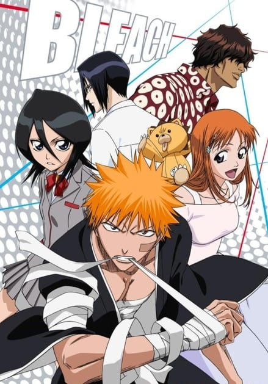
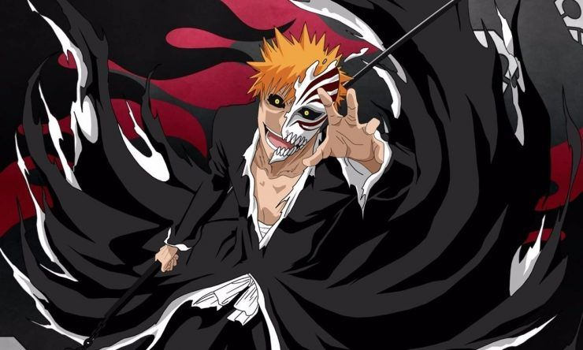

BleachEl manga se publicó por primera vez en agosto de 2001 por la editorial Shūeisha, en la revista Shōnen Jump, donde se publicó hasta su final el 22 de agosto de 2016. El primer tankōbon fue publicado el 5 de enero de 2002, mientras que el septuagésimo cuarto y último fue publicado el 4 de noviembre de 2016. Las versiones en español del manga comenzaron a publicarse en España por la editorial Editores de Tebeos y posteriormente por Panini Cómics, por Grupo Editorial Vid en México y por Editorial Ivrea en Argentina.
En el 2005, el manga obtuvo el premio Shōgakukan en la categoría shōnen, uno de los premios más prestigiosos que se da anualmente en Japón. En el 2008 fue el quinto manga más vendido, siendo solamente superado por One Piece, Naruto, 20th Century Boys y Katekyō Hitman Reborn! respectivamente, pero para el 2009 fue el tercero. Sin embargo, para el 2011 Bleach redujo considerablemente sus ventas, ocupando esta vez el octavo lugar. Del primer volumen se vendieron más de un millón de copias. Además, durante 2008 se vendieron 870 000 ejemplares del volumen 34, convirtiéndose en el duodécimo volumen mejor vendido de Japón. Los volúmenes 33 y 35 también estuvieron dentro de los veinte principales, pero se habían vendido menos ejemplares. En total, el manga vendió más de 3 100 000 copias en Japón en el año 2008, convirtiéndose en la quinta serie mejor comercializada. En febrero de 2018, el manga alcanzó la cifra de 120 millones de ejemplares impresos (no vendidos) en todo el mundo.
El anime de Bleach fue producido por los estudios Pierrot y dirigido por Noriyuki Abe. Se emitió por primera vez en Japón el 5 de octubre de 2004 en la cadena televisiva TV Tokyo, y finalizó el 27 de marzo de 2012 con un total de 366 episodios divididos en dieciséis arcos argumentales. En un ranking publicado por TV Asahi sobre los cien anime más populares del 2006 sobre la base de una encuesta on-line, Bleach alcanzó el puesto siete, mientras que en el 2005 había alcanzado el puesto cuarenta y dos. En el año 2007, Bleach fue nominado al premio estadounidense American Anime Awards.
También se ha creado dos animaciones originales de la serie; la primera, "Bleach: Memories in the Rain" se emitió en el 2004 en Jump Festa, la cual está basada en los episodios ocho y nueve del anime, aunque con versiones modificadas. Se centra principalmente en los sentimientos de Ichigo en relación a la muerte de su madre. La segunda, "Bleach: The Sealed Sword Frenzy", se emitió en el 2005 igualmente en Jump Festa, esta vez tienen que detener a un malvado shinigami llamado Baishin, quien se libera de un sello que la Sociedad de Almas le había colocado.